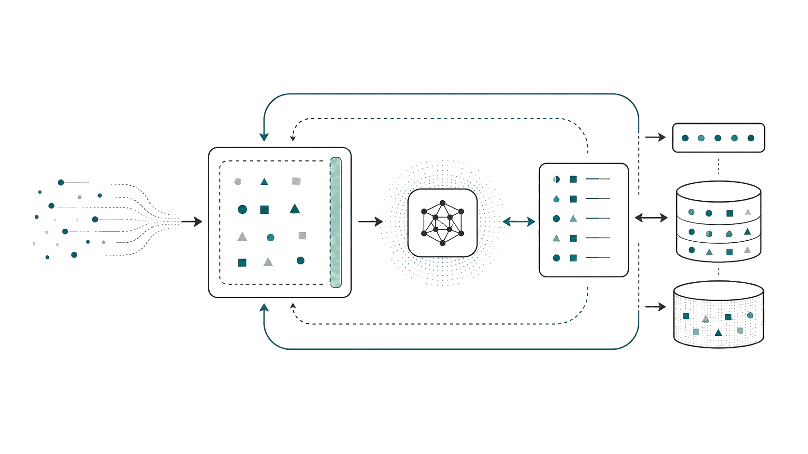
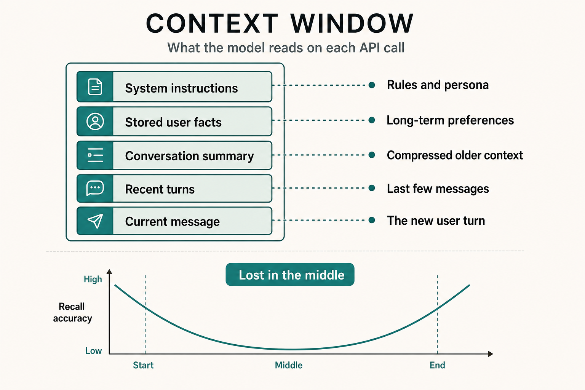
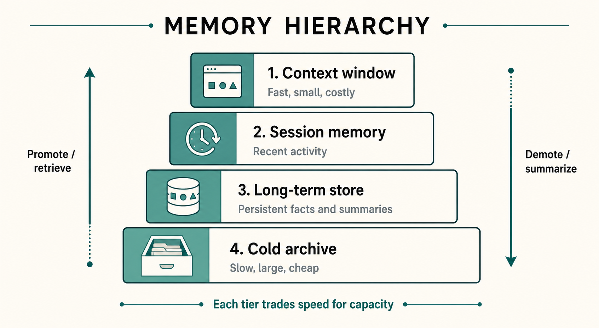
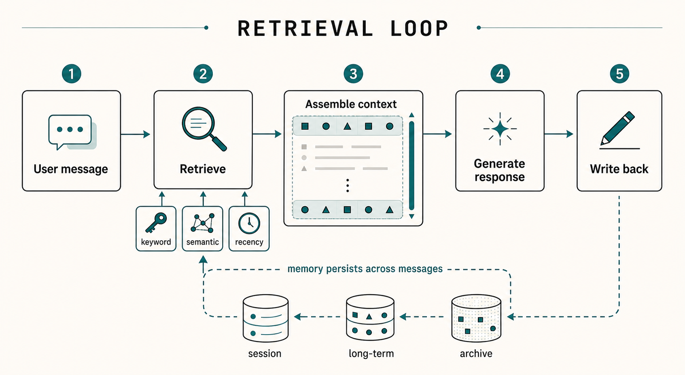
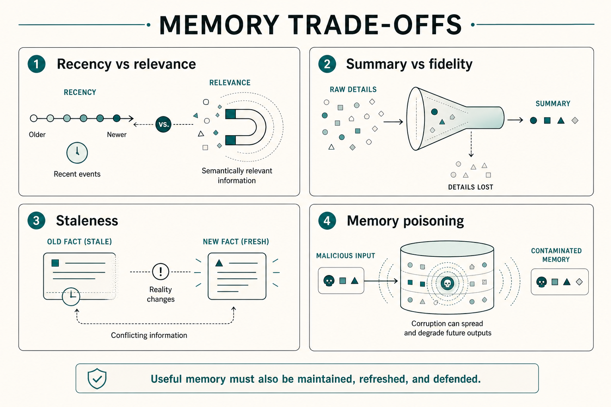

Context · Retrieval · Memory
智能体是
怎么记事的？
模型没有记忆，记忆在系统外面。

CORE TAKEAWAY
不是模型会记，
是系统会取。
stateless
context
retrieval
long-term
Context · Retrieval · Memory
模型没有记忆，记忆在系统外面。

不是模型会记，
是系统会取。
MODEL CONTRACT
你感受到的连续性，不是模型自己记住了，而是平台在每次调用前重新摆好上下文。
Prompt
系统把当前可见内容交给模型。
Run once
模型只处理这一轮窗口里的文本。
Blank again
下一次调用，本身没有上一轮状态。
智能
推理能力来自模型。
记忆
连续性来自系统工程。
CONTEXT IS NOT MEMORY
把历史全塞进去，短期有用；对话一长，成本、延迟和中间迷失会一起出现。

MEMORY SYSTEM
真实生产系统会在速度、容量和成本之间分层管理信息。

FOUR TYPES
记忆层级回答“存在哪里”，记忆类型回答“这条信息是什么”。
工作记忆
当前任务现场：代码、文件、最近几句话。
情景记忆
某次具体互动：什么时候讨论过什么。
语义记忆
稳定事实和偏好：你常用什么工具。
程序性记忆
做事方式：你希望它按什么格式工作。
REAL HARD PART
每条用户消息都要判断：哪些记忆此刻应该进入模型的感知？

MEMORY RISKS
有用的长期记忆，也会带来过期、压缩损失和安全攻击面。

PRACTICAL QUESTION
下次看到 memory 功能，真正该问的是它周围那套系统怎么工作。
它把什么内容写进长期记忆？
每一轮如何判断什么该被取回？
旧事实过期后，系统怎么发现和更新？
错误或恶意记忆，如何被隔离和清理？